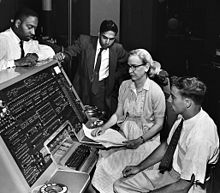

Grace Murray Hopper (Nova Iorque, 9 de dezembro de 1906 — Condado de Arlington, 1 de janeiro de 1992) foi almirante e, analista de sistemas da Marinha dos Estados Unidos nas décadas de 1940 e 1950, criadora da linguagem de programação de alto nível Flow-Matic (em desuso) — base para a criação do COBOL — e uma das primeiras programadoras do computador Harvard Mark I em 1944.

Infância e Educação
Grace Murray nasceu na cidade de Nova Iorque, sendo a mais velha de três irmãos. Seus pais, Walter Fletcher Murray e Mary Campbell Van Horne, eram de descendência Escocesa e Holandesa e cursaram o West End Collegiate Church. Seu bisavô, Alexander Wilson Russell, um almirante da Marinha Americana, lutou na Batalha da Baía de Mobile, durante a Guerra de Secessão.
Foi sempre foi uma criança curiosa, um traço que a marcou pela vida. Aos sete anos decidiu descobrir como funcionava um despertador. Desmontou sete despertadores antes que sua mãe percebesse o que estava fazendo - aí Grace foi autorizada a mexer em apenas um despertador.
Grace Hopper foi à Hartridge School em Plainfield, Nova Jersei. Foi inicialmente rejeitada no processo de admissão no Vassar College aos 16 anos (suas notas em latim eram baixas), sendo admitida no ano seguinte. Graduou-se em 1928 como bacharel em Matemática e Física e, em 1930, concluiu seu mestrado na Yale University. Em 1934, também na Yale University, conquistou seu Ph.D. em Matemática sob a orientação de Øystein Ore. A dissertação dela "Novos Critérios de Irredutibilidade" foi publicada no mesmo ano. Começou a ensinar Matemática no Vassar em 1931 e foi promovida a professora associada em 1941.
Foi casada com um professor da Universidade de Nova Iorque, Vincent Foster Hopper (1906–1976[8]) de 1930 a 1945, quando se divorciou dele.[5] Nunca se casou novamente, mas manteve o sobrenome Hopper.

Carreira
Hopper tentou se alistar na Marinha no começo da Segunda Guerra Mundial, mas foi rejeitada por algumas razões. Com 34 anos, ela era muito velha para se alistar e o seu Índice de Massa Corporal (IMC) era muito baixo. Outra razão foi a determinação de que o seu emprego como matemática e professora de matemática na Faculdade Vassar eram valioso demais para o esforço da guerra.
Em 1943, Grace tirou uma licença de Vassar e foi empossada na Marinha dos Estados Unidos. Foi uma das várias mulheres a se voluntariar no WAVES. Precisou de uma autorização excepcional para alistar-se, pois estava 6,8 kg abaixo do peso mínimo exigido pela Marinha (54 kg). Apresentou-se em Dezembro, e treinou na Escola Naval Reserve Midshipmen's do Smith College em Northampton, Massachusetts. Formou-se em 1944 como a primeira da turma e foi designada para a Bureau of Ships Computation Project da Harvard University como tenente júnior.
Ela serviu na equipe de programação Mark I computer dirigida por Howard H. Aiken. Hopper e Aiken escreveram três artigos sobre o Mark I, também conhecido como a Calculadora Automática Controlada por Sequência. O pedido de transferência de Hopper para a Marinha regular no final da guerra foi recusado devido à sua idade (38 anos). Continuou a servir na Reserva da Marinha e permaneceu no Laboratório de Computação de Harvard até 1949, recusando uma cátedra em Vassar para trabalhar como pesquisadora num contrato da Marinha na Harvard University.
Nos anos de 1970, Hopper defendeu para que o Departamento de Defesa substituísse grandes, centralizados sistemas com redes de pequenos computadores distribuídos. Como qualquer usuário de qualquer node de computador conseguia acessar bases de dados comuns localizadas na rede.[20] Ela desenvolveu a implementação de padrões para testar sistemas de computadores e componentes, principalmente para as linguagens de programação FORTRAN e COBOL. Os testes da Marina de conformidade em relação a esses padrões levaram a convergências significativas entre os dialetos de linguagens de programação dos vendedores dos principais computadores. Já nos anos de 1980, esses teste, e a sua administração oficial, foram assumidos pelo Escritório Nacional de Padrões (NBS), conhecido atualmente como o Instituto Nacional de Padrões e Tecnologia (NIST).
Aposentadoria
De acordo com os regulamentos de atrito da Marina, Hopper se aposentou da Reserva da Marina com o cargo de comandante com 60 anos no final de 1966. Ela foi chamada novamente para dever ativo em Agosto de 1967 por seis meses que se transformou em indefinido. Ela se aposentou novamente em 1971 mas foi chamada novamente em 1972. Ela foi promovida para capitã em 1973 pelo Admiral Elmo R. Zumwalt, Jr.
Depois que o Representante Republicano Philip Crane viu ela em um segmento Março 1983 de 60 Minutes, ele forneceu patrocínio à H.J.Res. 341, uma resolução colaborativa originada na Câmera de Representantes, a qual levou a promoção dela em 15 de Dezembro de 1983 por nomeação especial Presidencial pelo Presidente Ronald Reagan.
